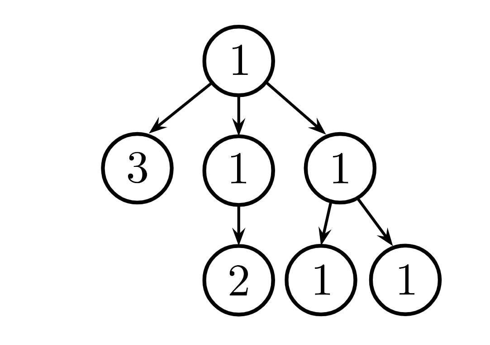

Lab 5 Solutions
Solution Files
Attendance
If you are in a regular 61A lab, your TA will come around and check you in. You need to submit the lab problems in addition to attending to get credit for lab. If you are in the mega lab, you only need to submit the lab problems to get credit.
If you miss lab for a good reason (such as sickness or a scheduling conflict) or you don't get checked in for some reason, just fill out this form within two weeks to receive attendance credit.
Required Questions
Mutability
Consult the drop-down if you need a refresher on mutability. It's okay to skip directly to the questions and refer back here should you get stuck.
Some objects in Python, such as lists and dictionaries, are mutable, meaning that their contents or state can be changed. Other objects, such as numeric types, tuples, and strings, are immutable, meaning they cannot be changed once they are created.
The two most common mutation operations for lists are item assignment and the
append method.
>>> s = [1, 3, 4]
>>> t = s # A second name for the same list
>>> t[0] = 2 # this changes the first element of the list to 2, affecting both s and t
>>> s
[2, 3, 4]
>>> s.append(5) # this adds 5 to the end of the list, affecting both s and t
>>> t
[2, 3, 4, 5]There are many other list mutation methods:
append(elem): Addelemto the end of the list. ReturnNone.extend(s): Add all elements of iterablesto the end of the list. ReturnNone.insert(i, elem): Insertelemat indexi. Ifiis greater than or equal to the length of the list, thenelemis inserted at the end. This does not replace any existing elements, but only adds the new elementelem. ReturnNone.remove(elem): Remove the first occurrence ofelemin list. ReturnNone. Errors ifelemis not in the list.pop(i): Remove and return the element at indexi.pop(): Remove and return the last element.
Dictionaries also have item assignment (often used) and pop (rarely used).
>>> d = {2: 3, 4: 16}
>>> d[2] = 4
>>> d[3] = 9
>>> d
{2: 4, 4: 16, 3: 9}
>>> d.pop(4)
16
>>> d
{2: 4, 3: 9}Q1: WWPD: List-Mutation
Important: For all WWPD questions, type
Functionif you believe the answer is<function...>,Errorif it errors, andNothingif nothing is displayed.
Use Ok to test your knowledge with the following "What Would Python Display?" questions:
python3 ok -q list-mutation -u
>>> s = [6, 7, 8]
>>> print(s.append(6))
None
>>> s
[6, 7, 8, 6]
>>> s.insert(0, 9)
>>> s
[9, 6, 7, 8, 6]
>>> x = s.pop(1)
>>> s
[9, 7, 8, 6]
>>> s.remove(x)
>>> s
[9, 7, 8]
>>> a, b = s, s[:]
>>> a is s
True
>>> b == s
True
>>> b is s
False
>>> a.pop()
8
>>> a + b
[9, 7, 9, 7, 8]
>>> s = [3]
>>> s.extend([4, 5])
>>> s
[3, 4, 5]
>>> a
[9, 7]
>>> s.extend([s.append(9), s.append(10)])
>>> s
[3, 4, 5, 9, 10, None, None]Q2: Insert Items
Write a function that takes in a list s, a value before, and a value
after. It modifies s in place by inserting after just after each
value equal to before in s. It returns s.
Important: No new lists should be created.
Note: If the values passed into
beforeandafterare equal, make sure you're not creating an infinitely long list while iterating through it. If you find that your code is taking more than a few seconds to run, the function may be in an infinite loop of inserting new values.
def insert_items(s: list[int], before: int, after: int) -> list[int]:
"""Insert after into s following each occurrence of before and then return s.
>>> test_s = [1, 5, 8, 5, 2, 3]
>>> new_s = insert_items(test_s, 5, 7)
>>> new_s
[1, 5, 7, 8, 5, 7, 2, 3]
>>> test_s
[1, 5, 7, 8, 5, 7, 2, 3]
>>> new_s is test_s
True
>>> double_s = [1, 2, 1, 2, 3, 3]
>>> double_s = insert_items(double_s, 3, 4)
>>> double_s
[1, 2, 1, 2, 3, 4, 3, 4]
>>> large_s = [1, 4, 8]
>>> large_s2 = insert_items(large_s, 4, 4)
>>> large_s2
[1, 4, 4, 8]
>>> large_s3 = insert_items(large_s2, 4, 6)
>>> large_s3
[1, 4, 6, 4, 6, 8]
>>> large_s3 is large_s
True
"""
index = 0
while index < len(s):
if s[index] == before:
s.insert(index + 1, after)
index += 1
index += 1
return s
# Alternate solution (backward traversal):
i = len(s) - 1
while i >= 0:
if s[i] == before:
s.insert(i + 1, after)
i -= 1
return sUse Ok to test your code:
python3 ok -q insert_itemsQ3: Group By
Write a function that takes in a list s and a function fn, and returns a dictionary that groups the elements of s based on the result of applying fn.
- The dictionary should have one key for each unique result of applying
fnto elements ofs. - The value for each key should be a list of all elements in
sthat, when passed tofn, produce that key (what it evaluates to).
In other words, for each element e in s, determine fn(e) and add e to the list corresponding to fn(e) in the dictionary.
def group_by(s: list[int], fn) -> dict[int, list[int]]:
"""Return a dictionary of lists that together contain the elements of s.
The key for each list is the value that fn returns when called on any of the
values of that list.
>>> group_by([12, 23, 14, 45], lambda p: p // 10)
{1: [12, 14], 2: [23], 4: [45]}
>>> group_by(range(-3, 4), lambda x: x * x)
{9: [-3, 3], 4: [-2, 2], 1: [-1, 1], 0: [0]}
"""
grouped = {}
for x in s: key = fn(x) if key in grouped:
grouped[key].append(x) else:
grouped[key] = [x] return groupedUse Ok to test your code:
python3 ok -q group_byIterators
Consult the drop-down if you need a refresher on iterators. It's okay to skip directly to the questions and refer back here should you get stuck.
An iterable is any value that can be iterated through, or gone through one element at a time. One construct that we've used to iterate through an iterable is a for statement:
for elem in iterable:
# do somethingIn general, an iterable is an object on which calling the built-in iter
function returns an iterator. An iterator is an object on which calling
the built-in next function returns the next value.
For example, a list is an iterable value.
>>> s = [1, 2, 3, 4]
>>> next(s) # s is iterable, but not an iterator
TypeError: 'list' object is not an iterator
>>> t = iter(s) # Creates an iterator
>>> t
<list_iterator object ...>
>>> next(t) # Calling next on an iterator
1
>>> next(t) # Calling next on the same iterator
2
>>> next(iter(t)) # Calling iter on an iterator returns itself
3
>>> t2 = iter(s)
>>> next(t2) # Second iterator starts at the beginning of s
1
>>> next(t) # First iterator is unaffected by second iterator
4
>>> next(t) # No elements left!
StopIteration
>>> s # Original iterable is unaffected
[1, 2, 3, 4]You can also use an iterator in a for statement because all iterators are
iterable. But note that since iterators keep their state, they're
only good to iterate through an iterable once:
>>> t = iter([4, 3, 2, 1])
>>> for e in t:
... print(e)
4
3
2
1
>>> for e in t:
... print(e)There are built-in functions that return iterators. These built-in Python sequence operations are said to compute results lazily.
>>> m = map(lambda x: x * x, [3, 4, 5])
>>> next(m)
9
>>> next(m)
16
>>> f = filter(lambda x: x > 3, [3, 4, 5])
>>> next(f)
4
>>> next(f)
5
>>> z = zip([30, 40, 50], [3, 4, 5])
>>> next(z)
(30, 3)
>>> next(z)
(40, 4)Q4: WWPD: Iterators
Important: Enter
StopIterationif aStopIterationexception occurs,Errorif you believe a different error occurs, andIteratorif the output is an iterator object.
Important: Python's built-in function
map,filter, andzipreturn iterators, not lists.
Use Ok to test your knowledge with the following "What Would Python Display?" questions:
python3 ok -q iterators-wwpd -u
>>> s = [1, 2, 3, 4]
>>> t = iter(s)
>>> next(s)
Error
>>> next(t)
1
>>> next(t)
2
>>> next(iter(s))
1
>>> next(iter(s))
1
>>> u = t
>>> next(u)
3
>>> next(t)
4>>> r = range(6)
>>> r_iter = iter(r)
>>> next(r_iter)
0
>>> [x + 1 for x in r]
[1, 2, 3, 4, 5, 6]
>>> [x + 1 for x in r_iter]
[2, 3, 4, 5, 6]
>>> next(r_iter)
StopIteration>>> map_iter = map(lambda x : x + 10, range(5))
>>> next(map_iter)
10
>>> next(map_iter)
11
>>> list(map_iter)
[12, 13, 14]
>>> for e in filter(lambda x : x % 4 == 0, range(1000, 1008)):
... print(e)
1000
1004
>>> [x + y for x, y in zip([1, 2, 3], [4, 5, 6])]
[5, 7, 9]Q5: Count Occurrences
Implement count_occurrences, which takes an iterator t, an integer n, and
a value x. It returns the number of elements in the
first n elements of t that are equal to x.
You can assume that t has at least n elements.
Important: You should call
nextontexactlyntimes. If you need to iterate through more thannelements, think about how you can optimize your solution.
from typing import Iterator # "t: Iterator[int]" means t is an iterator that yields integers
def count_occurrences(t: Iterator[int], n: int, x: int) -> int:
"""Return the number of times that x is equal to one of the
first n elements of iterator t.
>>> s = iter([10, 9, 10, 9, 9, 10, 8, 8, 8, 7])
>>> count_occurrences(s, 10, 9)
3
>>> t = iter([10, 9, 10, 9, 9, 10, 8, 8, 8, 7])
>>> count_occurrences(t, 3, 10)
2
>>> u = iter([3, 2, 2, 2, 1, 2, 1, 4, 4, 5, 5, 5])
>>> count_occurrences(u, 1, 3) # Only iterate over 3
1
>>> count_occurrences(u, 3, 2) # Only iterate over 2, 2, 2
3
>>> list(u) # Ensure that the iterator has advanced the right amount
[1, 2, 1, 4, 4, 5, 5, 5]
>>> v = iter([4, 1, 6, 6, 7, 7, 6, 6, 2, 2, 2, 5])
>>> count_occurrences(v, 6, 6)
2
"""
count = 0
for _ in range(n):
if next(t) == x:
count += 1
return countUse Ok to test your code:
python3 ok -q count_occurrencesQ6: Repeated
Implement repeated, which takes in an iterator t and an integer k greater
than 1. It returns the first value in t that appears k times in a row.
You may assume that there is an element of t repeated at least k times in a row.
Important: Call
nextontonly the minimum number of times required. If you are receiving aStopIterationexception, yourrepeatedfunction is callingnexttoo many times.
from typing import Iterator # "t: Iterator[int]" means t is an iterator that yields integers
def repeated(t: Iterator[int], k: int) -> int:
"""Return the first value in iterator t that appears k times in a row,
calling next on t as few times as possible.
>>> s = iter([10, 9, 10, 9, 9, 10, 8, 8, 8, 7])
>>> repeated(s, 2)
9
>>> t = iter([10, 9, 10, 9, 9, 10, 8, 8, 8, 7])
>>> repeated(t, 3)
8
>>> u = iter([3, 2, 2, 2, 1, 2, 1, 4, 4, 5, 5, 5])
>>> repeated(u, 3)
2
>>> repeated(u, 3)
5
>>> v = iter([4, 1, 6, 6, 7, 7, 8, 8, 2, 2, 2, 5])
>>> repeated(v, 3)
2
"""
assert k > 1
count = 0
last_item = None
while True:
item = next(t)
if item == last_item:
count += 1
else:
last_item = item
count = 1
if count == k:
return itemUse Ok to test your code:
python3 ok -q repeatedCheck Your Score Locally
You can locally check your score on each question of this assignment by running
python3 ok --scoreThis does NOT submit the assignment! When you are satisfied with your score, submit the assignment to Pensieve to receive credit for it.
Submit Assignment
Submit this assignment by uploading any files you've edited to the appropriate Pensieve assignment. Lab 00 has detailed instructions.
Correctly completing all questions is worth one point. If you are in the regular lab, you will need your attendance from your TA to receive that one point. Please ensure your TA has taken your attendance before leaving.
Optional Questions
These questions are optional. If you don't complete them, you will still receive credit for this assignment. They are great practice, so do them anyway!
Q7: Sprout Leaves
Define a function sprout_leaves that takes in a tree t and a list of
leaf labels leaves. It returns a new tree that is identical to t, but in which each
old leaf node has new branches, one for each leaf label in leaves.
For example, say we have the tree t = tree(1, [tree(2), tree(3, [tree(4)])]):
1
/ \
2 3
|
4If we call sprout_leaves(t, [5, 6]), the result is the following tree:
1
/ \
2 3
/ \ |
5 6 4
/ \
5 6def sprout_leaves(t, leaves):
"""Sprout new leaves containing the labels in leaves at each leaf of
the original tree t and return the resulting tree.
>>> t1 = tree(1, [tree(2), tree(3)])
>>> print_tree(t1)
1
2
3
>>> new1 = sprout_leaves(t1, [4, 5])
>>> print_tree(new1)
1
2
4
5
3
4
5
>>> t2 = tree(1, [tree(2, [tree(3)])])
>>> print_tree(t2)
1
2
3
>>> new2 = sprout_leaves(t2, [6, 1, 2])
>>> print_tree(new2)
1
2
3
6
1
2
"""
if is_leaf(t):
return tree(label(t), [tree(leaf) for leaf in leaves])
return tree(label(t), [sprout_leaves(s, leaves) for s in branches(t)])Use Ok to test your code:
python3 ok -q sprout_leavesQ8: Pruning Leaves
Implement prune_leaves, which takes a tree t and a tuple of values vals.
It returns a version of t with all its leaves whose labels are in vals
removed. Do not remove non-leaf nodes and do not remove leaves that do not
match any of the items in vals. Return None if pruning the tree results in
there being no nodes left in the tree.
def prune_leaves(t, vals):
"""Return a version of t with all leaves that have a label
that appears in vals removed. Return None if the entire tree is
pruned away.
>>> t = tree(2)
>>> print(prune_leaves(t, (1, 2)))
None
>>> numbers = tree(1, [tree(2), tree(3, [tree(4), tree(5)]), tree(6, [tree(7)])])
>>> print_tree(numbers)
1
2
3
4
5
6
7
>>> print_tree(prune_leaves(numbers, (3, 4, 6, 7)))
1
2
3
5
6
"""
if is_leaf(t) and (label(t) in vals):
return None
new_branches = []
for b in branches(t):
new_branch = prune_leaves(b, vals)
if new_branch:
new_branches.append(new_branch)
return tree(label(t), new_branches)Use Ok to test your code:
python3 ok -q prune_leavesQ9: Path Sum
Define a function pathsum, which takes in a tree of numbers t and a number n. It returns True if there is a path from the root to a leaf such that the sum of the numbers along that path is n and False otherwise.
def pathsum(t, n):
"""
>>> my_tree = tree(2, [tree(3, [tree(5), tree(7)]), tree(4)])
>>> pathsum(my_tree, 12) # 2 -> 3 -> 7
True
>>> pathsum(my_tree, 5) # A path that doesn't reach a leaf such as 2 -> 3 doesn't count
False
"""
if is_leaf(t):
return n == label(t)
for branch in branches(t):
if pathsum(branch, n - label(t)):
return True
return FalseUse Ok to test your code:
python3 ok -q pathsumQ10: Perfectly Balanced
Implement sum_tree, which returns the sum of all the labels in tree t.
def sum_tree(t):
"""Add all elements in a tree.
>>> t = tree(4, [tree(2, [tree(3)]), tree(6)])
>>> sum_tree(t)
15
"""
total = 0
for b in branches(t):
total += sum_tree(b)
return label(t) + totalUse Ok to test your code:
python3 ok -q sum_treeThen, implement balanced, which returns whether every branch of t has the
same total sum and that the branches themselves are also balanced.

- For example, the tree above is balanced because each branch has the same total sum, and each branch is also itself balanced.
def balanced(t):
"""Checks if each branch has same sum of all elements and
if each branch is balanced.
>>> t = tree(1, [tree(3), tree(1, [tree(2)]), tree(1, [tree(1), tree(1)])])
>>> balanced(t)
True
>>> t = tree(1, [t, tree(1)])
>>> balanced(t)
False
>>> t = tree(1, [tree(4), tree(1, [tree(2), tree(1)]), tree(1, [tree(3)])])
>>> balanced(t)
False
"""
for b in branches(t):
if sum_tree(branches(t)[0]) != sum_tree(b) or not balanced(b):
return False
return TrueUse Ok to test your code:
python3 ok -q balancedChallenge: Solve both of these parts with just 1 line of code each.
Q11: Partial Reverse
Partially reversing the list [1, 2, 3, 4, 5] starting from index 2 until the
end of the list will give [1, 2, 5, 4, 3].
Implement the function partial_reverse which reverses a list starting from
index start until the end of the list. This reversal should be in-place,
meaning that the original list is modified. Do not create a new list inside your
function, even if you do not return it. The partial_reverse function returns
None.
Hint: You can swap elements at index
iandjin listswith multiple assignment:s[i], s[j] = s[j], s[i]
def partial_reverse(s: list[int], start: int) -> None:
"""Reverse part of a list in-place, starting with start up to the end of
the list.
>>> a = [1, 2, 3, 4, 5, 6, 7]
>>> partial_reverse(a, 2)
>>> a
[1, 2, 7, 6, 5, 4, 3]
>>> partial_reverse(a, 5)
>>> a
[1, 2, 7, 6, 5, 3, 4]
"""
end = len(s) - 1
while start < end:
s[start], s[end] = s[end], s[start]
start, end = start + 1, end - 1Use Ok to test your code:
python3 ok -q partial_reverse